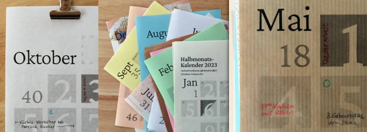
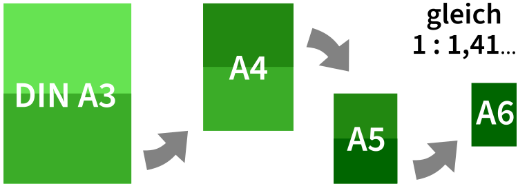
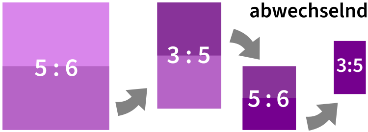

Auf dieser Website ist Platz für das, wofür mein Twitterprofil @charakterziffer nicht ausreicht. Mein Blog ist als Plus zu meinen Tweets gedacht, eben „@cz+“. // Die letzten drei Artikel:
Mein Arbeitszimmer hat zur Straße hin ein recht breites Fenster. Seit letztem Jahr hänge ich monatlich ein neues Bild an die Scheibe und wer draußen vorbeiläuft, kann es sehen und freut sich vielleicht darüber. Für mich selbst ist es als kreative Herausforderung gedacht; so muss ich mir regelmäßig ein neues Motiv überlegen und zum Malkasten greifen.
Ich denke nicht, dass ich wahnsinnig gut mit Pinsel und Farben umgehen kann, aber wer weiß, vielleicht wird das ja noch. Ohne Übung passiert jedenfalls gar nichts. Hier nun die ersten zwölf meiner Fensterbilder (anklicken für eine größere Version):
Habt ihr ähnliche Projekte, mit denen ihr eure Kreativität herausfordert? Gibt es eine Fertigkeit, die ihr gern üben möchtet?
Wird man mit der Zeit weniger innovativ und verlässt sich nur noch auf Althergebrachtes? Oder lernt man mit der Zeit, dass man nicht immer etwas völlig Neues schaffen muss und Gutes, das sich bewährt hat, durchaus weiternutzen kann?
Es ist inzwischen jedenfalls schon der zwölfte kleine Wandkalender, den ich mir nach diesem Design gebaut habe. Auf jeder DIN-A5-Seite findet sich ein halber Monat (für ausreichend Vor- und Rückschau), die Zahlen sind angenehm groß (zum Lesen aus der Entfernung), es ist Platz für Termine und die Gestaltung ist klar und ansprechend. Sollte ich dieses Design mal überdenken? Oder macht jede Änderung die praktische Form nur schlechter?

Mein Kalenderdesign stelle ich hier wieder zum kostenlosen Download bereit. Diesmal habe ich nur eine Schwarz-Weiß-Version gemacht, die ich auf verschiedene Papiere gedruckt habe. Optional könnte man die Monatsblätter auch ganz lassen und nicht halbieren.
eine Spiralbindung aus dem Copy-Shop, als Aufhängung einen Drahtbügel aus einer Büroklammer,
jede Seite exakt mittig lochen und an einen Nagel hängen,
obere Kante schmal mit Leim binden und auf der Rückseite mit einem Aufhänger versehen oder
oder alle Blätter in eine Vielzweckklammer („Foldback-Klammer“) stecken – das ist meine Methode.
Übrigens steht der Halbmonatskalender wieder unter einer Creative-Commons-Lizenz mit Namensnennung, nicht kommerzieller Nutzung und Weitergabe unter gleichen Bedingungen. Er darf also gerne verbreitet werden.
Falls jemand den Kalender noch bearbeiten möchte (zum Beispiel die optionalen Feiertage aufs eigene Bundesland anpassen), bitte mich einfach kurz anschreiben. Dann verschicke ich gerne die SVG-Dateien. Die Schrift des Kalenders ist 2023 übrigens Crimson Pro von Jacques Le Bailly.
Am 19. August 2022 hatte unser Papierformat ein Jubiläum: Die Blattgröße DIN A4 ist vor genau 100 Jahren genormt worden. Genauer gesagt war es ein ganzes System aus verschiedenen Größen – von 4mal A0 bis A10, dazu die leicht größeren B- und C-Reihen (z. B. für Umschläge) und die etwas kleinere D-Reihe. Diese über 40 definierten Papiergrößen haben eines gemeinsam: Die kurze Papierseite verhält sich zur längeren wie 1 zu √2 (die Quadratwurzel aus 2, ungefähr 1,4142…).
Was ist das besondere an diesem krummen Seitenverhältnis? Es ist das einzige, dass gleich bleibt, wenn man das Format in der langen Seite halbiert. Faltet man ein DIN-A4-Blatt (29,7 × 21 cm) in der Mitte, entsteht ein halb so großes Blatt im Format DIN A5 (21 × 14,8 cm). Bei beiden Blättern ist die lange Seite √2-mal so lang wie die kurze.

Bei jedem anderen Format entsteht beim Halbieren immer abwechselnd ein breiteres oder schlankeres Rechteck. Hier beispielsweise ein Blatt mit dem Verhältnis 5 zu 6:

Es hat große Vorteile, wenn Papiermaße auf einheitliche Größen genormt sind. Zum Beispiel passen Akten genau in den entsprechenden Ordner, ohne dass oben oder seitlich etwas hervorsteht; ein ausgedruckter Brief lässt sich einfach falten und geht genau in den genormten Umschlag; man kann in jedem Schreibwarenladen Druckerpapier kaufen, ohne vorher messen zu müssen, ob das Format daheim wirklich in den Drucker passt. Und durch das „magische“ Seitenverhältnis 1:√2 lassen sich Vorlagen auf dem Kopierer vergrößern und verkleinern und gehen trotzdem auf das nächstkleinere oder nächstgrößere Blatt, weil die Proportionen ja gleich bleiben.
Praktisch, aber langweilig
Papiere im Verhältnis 1:√2 gab es schon zu Zeiten der Französischen Revolution. Auch für den Renaissance-Architekten Andrea Palladio zählte dieses Format zu harmonischen Seitenverhältnissen, die er in seinen Gebäuden zum Beispiel für Räume, Türen oder Fenster benutzt hat.
Eine Kritik am genormten Papierformat ist, dass es ziemlich unästhetisch sei (sagt zum Beispiel der bekannte Gestalter Erik Spiekermann im Dlf-Kultur-Beitrag über das DIN-Format). Meiner Meinung nach hat das viel mit Gewohnheit zu tun. Wenn jeder das gleiche Format verwendet, gilt dieses schnell als gewöhnlich, als langweiliger Standard. Alles was davon abweicht, ist interessanter.
Bei Büchern hat sich kein einheitliches Seitenverhältnis durchgesetzt, sondern das Format richtet sich im Idealfall nach dem Inhalt: Lyrikbände mit kurzen Gedichtzeilen sind eher schmal, mehrspaltige Nachschlagewerke eher breit, Romane liegen irgendwo dazwischen. Große Bildbände mit Landschaftsfotografien kommen manchmal sogar im Querformat daher.
Das allerschönste Format
Bevor sich das DIN-Format durchgesetzt hat, waren Papiere mit anderen Seitenverhältnissen üblich, zum Beispiel das schlanke, elegant wirkende Format 2:3 oder das als ruhig geltende 3:4. Aus dem Filmbereich kennt man das Bildformat 16:9 (als Querformat, so wie auch unsere Augen angeordnet sind). Ein weiteres bekanntes Seitenverhältnis ist der Goldene Schnitt (ca. 1:1,618).
Im 19. Jahrhundert untersuchte Gustav Theodor Fechner, Begründer der Psychophysik, ob es ein bestimmtes Seitenverhältnis gibt, das wir Menschen besonders ästhetisch finden – und ob es vielleicht der berühmte Goldene Schnitt sei. In seinem Buch Vorschule der Ästhetik von 1876 beschreibt er im Band 2 ab Seite 184 ein Experiment: Fast 350 Personen sollten aus zehn verschiedenen Karton-Rechtecken dasjenige aussuchen, das für sie den „wohlgefälligsten Eindruck“ mache.
Die Ergebnis-Tabelle zeigt, dass den meisten (rund 35 %) das Rechteck mit dem Seitenverhältnis 21:34 gefiel, was auch am nächsten am Goldenen Schnitt lag. Allerdings räumt Fechner ein, dass die Teilnehmer lange zwischen verschiedenen Formaten schwankten, bei einer Wiederholung ein anderes Rechteck wählten und ermuntert werden mussten, möglichst ganz allgemein und durchschnittlich die Wohlgefälligkeit zu beurteilen, nicht nach einem bestimmten Anwendungszweck.
Würde man den Versuch heute wiederholen, schätze ich, dass das Rechteck im gewohnten Fernsehformat 16:9 ziemlich weit vorn dabei wäre; genau wie dasjenige im DIN-Format 1:√2. Diese Verhältnisse sind uns heute einfach sehr vertraut (und darum wohlgefällig?).
Ihr könnt das ja mal ausprobieren: Nehmt ein großes Blatt Papier und zeichnet Freihand und nicht zu groß ein Rechteck mit möglichst harmonischem Seitenverhältnis – gerne im Hoch- und nochmal im Querformat. Wenn ihr nachmesst: Welches Format hat es bei euch?
Das Wort kombiniert Persönlichkeit (Charakter) mit Sachlichem (Ziffer). Zusammengesetzt ergibt sich ein Synonym für Mediävalziffer, eine Zahlenvariante mit Ober- und Unterlängen.
Schriftarten dieses Blogs
Wenn dein Browser eingebettete Schriften (WOFF2) unterstützt, dann liest du die Fließtexte hier in der Source Sans Pro von Paul D. Hunt, erschienen 2012 bei Adobe.
Die Überschriften sind aus der czSlab gesetzt, die ich für dieses Blog gestaltet habe. Sie orientiert sich an Yanones viel ausgefeilterer Antithesis von 2014.
§ 1 Externe Links · Dieses Blog verlinkt auf Websites Dritter. Zum Zeitpunkt der erstmaligen Verlinkung waren dort keine Rechtsverstöße ersichtlich. Da ich keinen Einfluss auf fremde Websites habe, kann ich für deren Inhalte und Gestaltung keine Haftung übernehmen. Sollte ich von Rechtsverstößen erfahren, entferne ich die Verlinkung unverzüglich. Eine ständige Kontrolle der externen Links ist ohne konkrete Hinweise aber nicht zumutbar.
§ 2 Datenschutzerklärung · Mir ist der Schutz deiner Daten sehr wichtig. Deshalb verzichte ich auf Cookies, vermeide möglichst Dienste von Drittanbietern und erhebe so wenige Daten wie es geht. Diese Website kann ohne die Angabe persönlicher Daten genutzt werden.
Die einzige Ausnahme sind Kommentare. Wenn du einen meiner Texte kommentierst, bekomme ich die eingegebenen Daten und eine Zeitangabe per (prinzipiell unsicherer) E-Mail zugestellt. Falls dein Kommentar sachlich zur Diskussion beiträgt, ergänze ich ihn öffentlich sichtbar unter dem entsprechenden Artikel. Dabei sind sämtliche Angaben freiwillig (Name, Website, Mailadresse, Kommentar) – auch anonyme Kommentare sind möglich.
§ 3 Widerspruch gegen Direktwerbung · Die Verwendung meiner Kontaktdaten zur gewerblichen Werbung ist ausdrücklich nicht erwünscht; ich widerspreche hiermit jeder kommerziellen Nutzung und Weitergabe meiner Daten (gemäß § 21 DSGVO). // Über private Fanpost freue ich mich allerdings sehr und antworte darauf mit großem Vergnügen!
 @charak
@charak